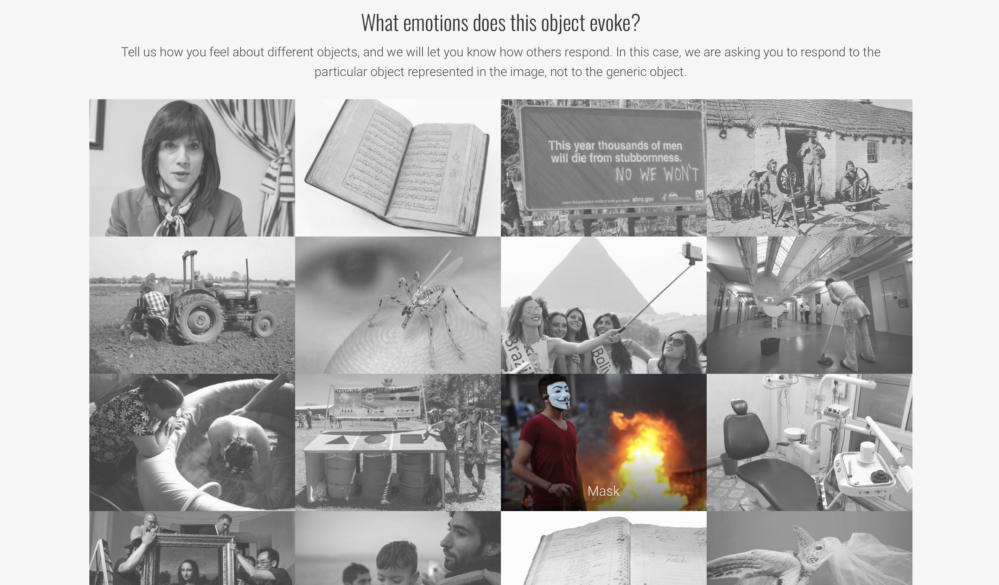

2020.11.5 - 11.10
Concept Supplement
"Men can only be happy when they do not assume that the object of life is happiness.”
—— George Orwell
At the beginning of ideating this concept, my starting point was to develop some kind of metaphorical installation that helps people to understand the dark side of their emotions, like a ritual therapy that cures people from being hurt by
their own feelings. I used to think that the less negative emotions you have, the happier you will be. But when I searched about “negative emotions” on YouTube, top results are mostly about how to deal with them, as if those emotions are
something we’re trying to get rid of. So I started to think that, how do we give definition to “negative emotions”? is it something that makes us feel unhappy? What is the difference of being happy and living a good
life? What if we
just try to embrace and play with those “negative” emotions?
Then I realize that those emotions are only your unique way of reacting to the external world, there should be no positive nor negative about those feelings, but a process of receiving and giving feedback.
Even more, maybe we should even pursue the dark emotions in order to fully understand our own ways of sensing the surroundings......
Inspired by An’s question: “ Is it better to let people see through your true feelings? Is emotions our own treasure or just a tool to observe others? ”, a new question is raised: do we tend to hide just our negative emotions or also
positive
emotions? All of these have given me more motivation to learn about the dark emotion area.
Above are some further thoughts inspired by the research, which could work as a complement and extension.
Research Report 1.0
After the brainstorming, I decided to go with the 2nd concept -- the origin, form and results of a suspicious mind. Suspicion sits in between of the past and the future, it was born when the past starts to effect the future. The suspicious mind is like a microscope, enlarging all the capillaries and keep bifurcating tiny things.Keywords: Derived from past experience | Self-protection | Affects the future
Question 1: Behavioral characteristics of suspicion
In the majority of cases paranoia does not serve a defensive function, but instead builds on interpersonal concerns conscious to the person. (Daniel Freeman, Suspicious minds: The psychology of persecutory delusions)
A suspicious mind is always ill-at-ease and spotting hidden meanings nobody else even considers are there. (wikiHow) It produces three behavioral characteristics: Magnifying, Minimizing, and Making-up.
Magnifying, is to exaggerate what happened, over-summarize, make a fuss about failure, and think that one failure all the time. For example, if a suspicious person text someone, and she/he doesn’t reply the person in a short time, this persons might start to think that “did I do something wrong that made he/she angry?”.
Minimizing, is only focusing on a very small part of the fact, on one’s own shortcomings or failings, and thus ignore most of his/her excellence and success. For example, if you’re suspicious and giving a lecture on the stage, 118 students out of 120 are listening carefully, the rest two of them are sleeping, you might consider your lecture as a failure cause it’s so boring that students are sleeping.
Making-up means to trump up reasons and results that does’t even make sense due to over association, to take an emotion out of nothing and think it’s the reality. There’s an awfulising thinking in this characteristic, that we tend to believe the bad results rather than the good results. This habit of thinking creates a tense and depressed atmosphere for people to live with.
Question 2: How to convey the idea of self-protection
The social level of suspicion is manifested as conspiracy theories. The study of conspiracy theory from the phycological perspective only started 10-15 years ago.There’s an interesting research from Rob Brotherton’s lecture Suspicious
Minds: The Social and Cognitive Psychology of Conspiracy Theories:
if you ask people if they think the Apollo program is fake, some people would believe it and
others won’t; if you ask these people if they would like to
participate in the fraud of faking this news, you’ll find that the group of people that is more willing to participate is the same group of people that is more likely to believe it’s a fraud. We only suspect other people will
lie to us cause we would lie to others as well. “There’s a correlation between willingness to conspire and the belief in conspiracy theories”. According to the author of this study, this is a psychological tendency that we
call projection.
When we don’t have firm fact, we can just look in places other than the history book when we’re judging how plausible were or implausible what conspiracy is. When we look into ourselves and other people, we tend to project our own personal
tendencies and beliefs onto other people. The person who would say yes to conspiracy theories tend to think the world is full of budding conspirators.
We use our suspicion as a protection, to avoid being exposed to others directly. I wish to continue with a metaphor of an object with many layers to represent the self-protecting function of suspicion. In 7 in 7, I used onion to convey this
idea, the action of peeling the onion can be a good way to engage the audience into the interactive process. To enrich the meaning of the process, I wish to find other materials and media to replace the onion, but keep the movement of peeling
it. It is also interesting to rewind the process of peeling, to use the action of building up a shell outside an original object inserted of taking the outside skin off. The material used to build the “skin” represents our personal experience
that made us tend to protect ourselves. The “shell” grows thicker as our experience accumulates.
Question 3: How to concretize the abstract relationship into touchable/visible matters
The core of this question is to find the right metaphor and possible media to be the physical carrier of my idea. I’m satisfied with the metaphor of onion, as the peeling process shows a good analogy to understanding a suspicious mind with
concise and powerful interaction.
As professor Fan mentioned, smell is also something that represents certain experiences and evokes certain emotions.
Below is a video demonstrating the subtle relationship of the interaction between huamn and objects, which somehow evokes some specific emotions. For me, the sound and action of unpacking a pack of bread can represent the feeling of hungry
and satisfy.
Interaction Emotion from Rinus Bot on Vimeo.
In the project the Circles of Emotion, people are asekd to answer "What emotions does this object evoke?" with given pictures of certain things.
2020.11.16
Research Report 2.0
I decide to switch back to the concept of “unspeakable emotion” from “dark emotion” cause “dark” suggests more negative feelings, but what we’re trying to hide is not always negative.
To narrow down the “unspeakalbe emotions”, it would be more specific to select a set of representative scene that can evoke certain emotions.
“Emotions are a core foundation of what makes us human. But they are notoriously difficult to describe and analyze. Moreover, each emotion needs to be understood as part of a person’s whole emotional response. They need to be considered in relation to each other.”The whole society wants to see the positive in you, but who cares about your hidden emotions? For those emotions that you’re “not allowed” to express, where did they go? Are these unspeakable emotions just something you want to get rid of? It takes time and efforts for the therapists to peel off your disguise and help you to see your true self, why not peeling yourself off to show your resistance to the social pressure?
When doing 1 on 1 interview with the question of “under what circumstances would you think of the action of peeling”, several interesting points came out:
- When trying to eat, I peel eggs/fruits/vegetables, to get what’s inside to eat. You need to destroy the outer skin to get the inside. Sometimes you need to remove the useless part
- Taking clothes off / sexual scenarios
- When I want to find the core, so the more important thing is what’s left in the middle
- When there’s a gap suggesting that I can put my finger inside to peel it. (Obsessive-compulsive disorder/affordance)
As mentioned in the previous research, suspicion is what we use to protect ourselves instead of attacking others. Getting naked in a way means losing the protection, but what happens when you take off the protection yourself and show your soft heart? This reminds me of getting naked as a form of performance art. In essence, it’s an approach to show free will behavior against the existing rules.
The short film NOT MY RESPONSIBILITY made by Billie Eilish is a good example of questioning the public opinion. In the film, Billie takes off her clothes piece by piece, which is a strong rhetorical question about being body shamed. I personally LOVE this film and it also inspired me with the power of revolting, that we can fight back with what was thrown to us.
Possibilities for outcome
 Awkward is a short film featuring social awkwardness by Nata Metlukh. In the film, the author demonstrates several
typical scenarios when people feel extremely
awkward, which are very resonate thus easy to pass on certain emotions. It might be helpful to set specific scenario premise before introducing the ritual experiment. For instance, given the topic of jealousy, it’s pretty
easy to convey this emotion by putting the audience into the scenario of seeing someone you hate having something you want but can’t have.
Awkward is a short film featuring social awkwardness by Nata Metlukh. In the film, the author demonstrates several
typical scenarios when people feel extremely
awkward, which are very resonate thus easy to pass on certain emotions. It might be helpful to set specific scenario premise before introducing the ritual experiment. For instance, given the topic of jealousy, it’s pretty
easy to convey this emotion by putting the audience into the scenario of seeing someone you hate having something you want but can’t have.
The Circles of Emotions project is aimed at describing and analyzing human emotions to understand this complicity, which is similar to my target of materializing
abstract
emotions to enhance people’s awareness towards their own feelings. The response to the Circles of Emotions research are assigned to several catalogues, such as heavy, quiet and sombre. It might be a good approach to use
affinity mapping to select and define the specific emotions I could work with and assign the context.

I expect the outcome of this project to be a series of experiments with different materials. Each one of the experiments has a plot representing one kind of dark emotion (to be determined after the user testing). Multiply material
representations should be chosen for each emotion as emotions are usually complex and entangled. There’s also a need to define the ritual connection between behaviors and emotions. Initiative and passivity are the key points I hope to discuss
in these ritual senses.
The experiment will be divided into two parts: the first part is “packing” the materials together, which should be down before showing to the audience; and the second part is “peeling”, guiding the audience to open the whole aggregate of
materials and show what’s inside. Instead of directly telling the audience to peel, the second stage should be seductive, meaning the audience should be tempted to follow the object’s wish of self-exposing without
direct instruction. This is to convey the idea of active residence to the social pressure which tries to shut you up from spitting out your hidden emotions, similar to the naked protest that uses the power of naked bodies as a
strength of speaking out.
Other Piecemeal Ideas
- Why do we want others to understand us?
- Why do people desire the ability of mind reading?
Futher Steps
- Explore the connection between material and emotions
 With the question of “what is the historical background of a collar and what emotion a collar can evoke”, Margot Lévêque came up with a publication entitled Mysterium Conjunctionis which unpacks the myriad forms of the collar, be it a ruffle,
a Peter Pan, or a turtleneck.
I’m especially touched by the flower collar shown above, which gives a sense of peace and relaxation. Simple media can also convey strong common feelings that let the audience resonate without extra explanation.
With the question of “what is the historical background of a collar and what emotion a collar can evoke”, Margot Lévêque came up with a publication entitled Mysterium Conjunctionis which unpacks the myriad forms of the collar, be it a ruffle,
a Peter Pan, or a turtleneck.
I’m especially touched by the flower collar shown above, which gives a sense of peace and relaxation. Simple media can also convey strong common feelings that let the audience resonate without extra explanation.
2020.12.7
Research Report 3.0
Cut Piece is an art performance by Yoko Ono. It was performed several times under different social statuses and in different location. During the performance, the artist sits on the ground, and each audience could come to the stage and cut one piece of her clothes to take away, this goes on until the artist became totally naked. I'm greatly inspired by the brave invitation that the artist gave to the audience to cut her clothes off, as well as the subtle emotion evoked during the whole process.It comes to me that, the active self-exposing could be a reverse way to show resistance to the environment. If the object successfully seduced the audience to peel it's outer skin off, it could be a successful protest to the social pressure. Here, the inner layer of the object is a metaphor for the social pressure that pushes you to hide your unspeakable emotions. While peeling off the layers until you see the core, you are invited to engage in the protest, and in the end, you will find the objects staring straight at you (by finding the camera towards the audience inside the layers), showing the repressive power of questioning.